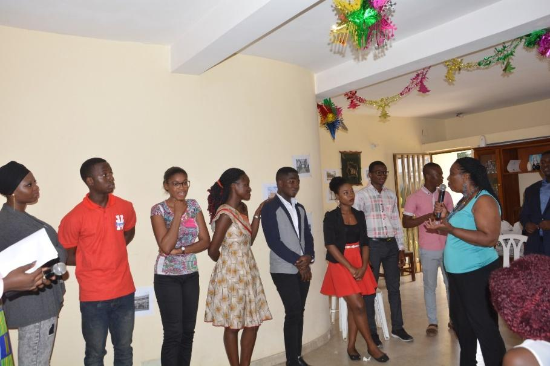
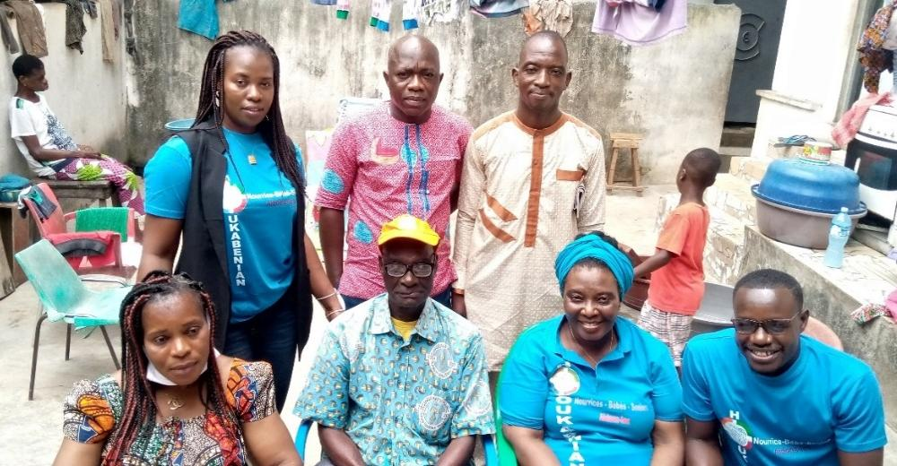
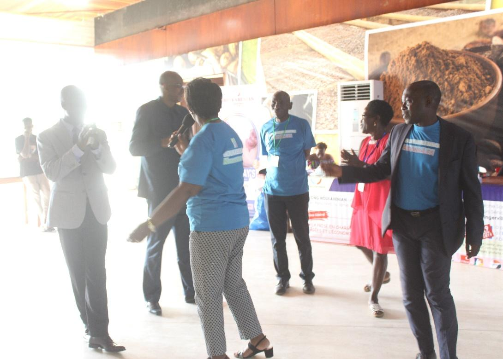
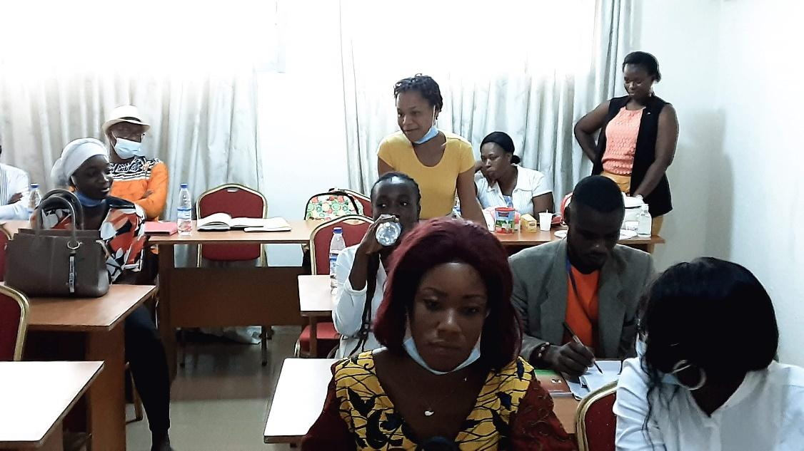

Rejoignez notre équipe de bénévoles et contribuez à changer des vies au quotidien.
C'est grâce à l'aide précieuse de notre équipe d'une cinquantaine de bénévoles que nous pouvons mettre tout en œuvre pour accompagner humainement les personnes aînées et les familles aussi longtemps que nécessaire. Sans ces complices nous n'arriverions pas à tout accomplir. Ils sont une source d'inspiration en raison de la différence qu'ils font dans le quotidien des personnes que nous soutenons.
Nous travaillons de concert avec notre cinquantaine de bénévoles retraitées pour aider plus de 200 personnes de nos secteurs. Que ce soit pour des visites et d'appels d'amitié et de soutien divers.
Ils sont essentiels à la mission de l'ONG et sont l'une des pierres angulaires. Les personnes auprès desquelles nous œuvrons ne pourraient recevoir autant de présences et de soutien sans leurs collaborations.
Découvrez pourquoi rejoindre HOUKABENIAN est une expérience enrichissante et transformatrice.

94 % des personnes qui font du bénévolat mentionnent que ça améliore leur humeur. Le bénévolat contribue à améliorer la qualité de vie et la santé des collectivités. Une étude révèle que 100 heures de bénévolat par année améliorent les capacités physiques et mentales. Les aînés qui font du bénévolat sont moins souvent aux prises avec une maladie liée au stress.
Lire la suite
Depuis 5 ans, nos bénévoles contribuent dans le plaisir à cette œuvre de solidarité et d'entraide. Ils accompagnent des personnes âgées isolées dans un esprit familial. Dans tout le pays, vous trouverez à HOUKABENIAN une ambiance chaleureuse, humaine et festive.
Lire la suite
Nous savons que votre temps est précieux et que vous désirez vivre différentes expériences. Nous respectons le temps que vous avez à donner et les limites que vous exprimez. Par exemple approximativement quatre heures par mois.
Lire la suite
Célébrer la beauté de la vie et de la vieillesse fait partie de notre vision. Tout ce que nous faisons vise à créer du bonheur en offrant amitié, tendresse et réconfort.
Lire la suite
Briser l'isolement, une personne à la fois, avec un sourire, une écoute paisible, une bonne conversation amicale, le fait d'être simplement là.
Lire la suite
Le secteur caritatif est l'un des trois piliers de la société aux côtés des secteurs public et privé. HOUKABENIAN dépend largement de cette source vive pour mener sa mission à bien.
Lire la suite
Les jeunes sont engagés et font du bénévolat (54 % des 15 à 24 ans). Chez HOUKABENIAN, nous trouvons des bénévoles de tous âges et de toutes générations.
Lire la suite
Nos bénévoles sont des gens actifs qui choisissent d'offrir leur temps pour aider des personnes dans le besoin. Ils retirent de nombreux bienfaits comme le sentiment d'appartenance, des liens sociaux, le perfectionnement de leurs compétences.
Lire la suite
Au cœur de notre action, les gens. HOUKABENIAN ne serait pas ce qu'il est sans bénévoles. Devenir bénévole c'est porter intérêt envers les bébés, les enfants et les parents.
Lire la suite
Connaissance de soi, valorisation, moyen de se réaliser, plus grande ouverture aux autres, acquisition de connaissances et d'habiletés nouvelles.
Lire la suiteNous avons un processus de recrutement et c'est par une entrevue de sélection rigoureuse avec la coordonnatrice et la directrice que l'on devient bénévole. Les personnes intéressées doivent remplir un formulaire d'adhésion prévu à cet effet.
Chaque bénévole reçoit une fiche d'identification et signe un contrat d'adhésion qui définit les engagements mutuels entre le bénévole et l'ONG HOUKABENIAN. Ces documents garantissent un cadre clair et respectueux pour tous.
Remplissez le formulaire ci-dessous pour soumettre votre candidature.